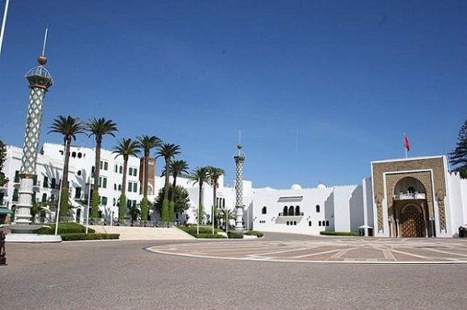
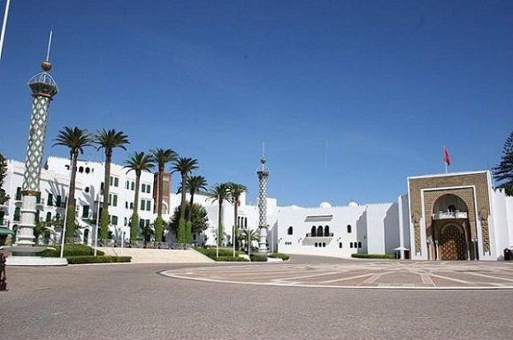
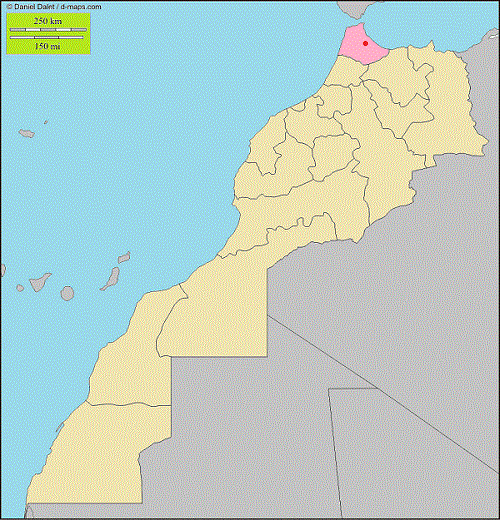

Tétouan
La ville de Tétouan (arabe : Titwan déformation du mot Tittawen en amazigh, pluriel de Tit = œil) est la capitale et le centre culturel de la région du Tanger (Tanja) au nord du Maroc, au Rif occidental ; elle est considérée comme la ville la plus andalouse du royaume. Depuis 1999, elle est devenue la résidence estivale principale du Roi Mohammed VI.
La ville est située près de Ceuta dans le Pays de Jebala à environ 60 kilomètres à l'est de la ville de Tanger et à proximité du détroit de Gibraltar. Elle est située dans une vallée (la cluse de Tétouan) creusée par l'oued Mhannech dans les montagnes de la chaîne calcaire du Rif au nord et au sud. Près de Tétouan, on trouve plusieurs villes côtières très touristiques comme Mediek et Martil, et des villages de vacances comme Marina Smir et Cabo Negro.
La Wilaya de Tétouan s'étend sur une superficie de 10375 km².
En 2004, la population de la ville atteint 320 539 habitants (277 516 en 1994).
Tétouan

Palais Royal à Tétouan
Administration

Palais Royal à Tétouan
Administration
| aaaaaaaaaaaaaaaaaaaaaaaaaaaaa | |
| Pays |  Maroc Maroc |
| Région | Tanger-Tétouan |
| Province | Tétouan |
Géographie
| aaaaaaaaaaaaaaaaaaaaaaaaaaaaa | |
| Coordonnées | 35° 34' 21" Nord |
| 05° 21' 17" Ouest |
Démographie
| aaaaaaaaaaaaaaaaaaaaaaaaaaaaa | |
| Population | 320 539 hab. (2004) |
Diveres
Fondation au iiie siècle av. J.-C
Localisation
